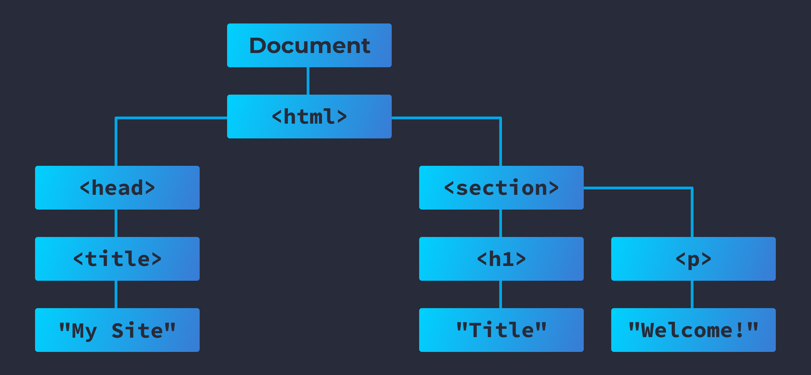

Características y Objetivos del DOM (Document Object Model)
Josué Díaz - Segundo nivel
Actividad Autónoma 1
¿Qué es el DOM?
El Document Object Model (DOM) es una interfaz de programación que permite a los lenguajes de programación interactuar con documentos HTML y XML. El DOM convierte la estructura de un documento en una representación jerárquica, en la que los elementos de la página son objetos que pueden ser manipulados mediante JavaScript u otros lenguajes de programación.
Características del DOM
El DOM es un modelo de objetos basado en la jerarquía. A continuación se destacan algunas de sus características clave:
- Es una representación estructurada de un documento HTML o XML.
- Permite la manipulación de la estructura y el contenido del documento.
- Los documentos se pueden modificar de forma dinámica, es decir, se pueden agregar, eliminar o modificar elementos en tiempo real.
- El DOM convierte cada elemento HTML en un objeto accesible y manipulable.
- Es lenguaje-agnóstico, lo que significa que puede ser utilizado con diferentes lenguajes de programación como JavaScript, Python, entre otros.
Objetivos del DOM
Los principales objetivos del DOM incluyen:
- Permitir la modificación dinámica del contenido y estructura de la página web sin necesidad de recargar la página.
- Facilitar la interacción con los elementos del documento a través de scripts.
- Proveer una representación clara y estructurada del contenido, lo que facilita su manejo y edición.
- Habilitar la creación de páginas web interactivas y dinámicas, mejorando la experiencia del usuario.
Estructura del DOM
El DOM se organiza en una estructura jerárquica de nodos, donde cada nodo representa un elemento del documento (como etiquetas HTML, texto, atributos, etc.). La estructura básica del DOM es un árbol donde:
- Elemento: Representa etiquetas HTML.
- Atributo: Representa atributos de las etiquetas HTML.
- Texto: Representa el contenido textual dentro de un elemento HTML.
- Comentario: Representa los comentarios dentro del documento.

Manipulación del DOM
A través de JavaScript, se pueden realizar diversas acciones sobre el DOM, como:
- Acceder a elementos: Usando métodos como
getElementById, querySelector, entre otros.
- Modificar contenido: Cambiar el texto o atributos de un elemento usando propiedades como
innerHTML, textContent, etc.
- Crear y eliminar elementos: Usando métodos como
createElement y removeChild.
- Aplicar eventos: Se pueden agregar eventos como clics, desplazamientos, entre otros.
Ventajas del DOM
- Interactividad: Permite crear aplicaciones web más dinámicas y reactivas.
- Actualización sin recarga: Permite actualizar partes de la página sin recargarla completamente.
- Accesibilidad: Facilita la creación de sitios web accesibles mediante la manipulación de contenido y eventos.
- Modularidad: Permite organizar y manejar las diferentes partes de un documento de forma ordenada y accesible.